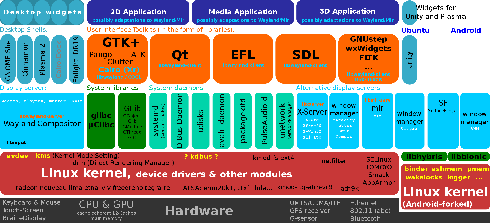

Linux系统介绍
Linux是一套免费使用和自由传播的类Unix操作系统，是一个基于POSIX的多用户、多任务、支持多线程和多CPU的操作系统，继承了Unix以网络为核心的设计思想，是一个性能稳定的多用户网络操作系统。
Linux操作系统诞生于1991 年10 月5 日（这是第一次正式向外公布时间）。Linux存在着许多不同的Linux版本，但它们都使用了Linux内核。Linux可安装在各种计算机硬件设备中，比如手机平板电脑、路由器、视频游戏控制台、台式计算机、大型机和超级计算机。
严格来讲，Linux这个词本身只表示Linux内核，但实际上人们已经习惯了用Linux来形容整个基于Linux内核，并且使用GNU工程各种工具和数据库的操作系统。

Linux发展历史
Linux 操作系统的诞生、发展和成长过程始终依赖着五个重要支柱：
- UNIX操作系统
- MINIX操作系统
- GNU计划
- POSIX标准
- Internet 网络
Unix操作系统
Unix 操作系统，是一个强大的多用户、多任务操作系统，支持多种处理器架构，按照操作系统的分类，属于分时操作系统，最早由Ken Thompson、Dennis Ritchie 和 Douglas McIlroy于1969年在 AT&T 的贝尔实验室开发。
肯·汤普逊最初在 GE-645 机器上，写出了一个仿真器，可以让一个文件系统与内存分页机制运作起来。他同时也写了一个程序语言Bon，编写了一个太空旅行游戏。经过实际运行后，他发现游戏速度很慢而且耗费昂贵，每次运行会花费75美元。在 GE-645 被搬走后，肯·汤普逊在实验室中寻找没人使用的机器，找到了几台 PDP-7。丹尼斯·里奇的帮助下，汤普逊用 PDP-7 的汇编语言重写了这个游戏，并使其在 DEC PDP-7上运行起来。
1969年，肯·汤普逊开发了一个壳层（shell）与一些驱动程序，做出一个操作系统的雏形。在团队合作下，最终做出了一个分时多任务操作系统，成为第一版UNIX。
第一版 UNIX 是用PDP-7汇编语言编写的，一些应用是由叫做B语言的解释型语言和汇编语言混合编写的。
在进行系统编程时不够强大，所以汤普逊和里奇对其进行了改造，并于1971年共同发明了C语言。
1973年汤普逊和里奇用C语言重写了Unix，形成第三版UNIX。在当时，为了实现最高效率，系统程序都是由汇编语言编写，所以汤普逊和里奇此举是极具大胆创新和革命意义的。用C语言编写的Unix代码简洁紧凑、易移植、易读、易修改，为此后Unix的发展奠定了坚实基础。
此后的10年，Unix在学术机构和大型企业中得到了广泛的应用，当时的UNIX拥有者AT&T公司以低廉甚至免费的许可将Unix源码授权给学术机构做研究或教学之用，许多机构在此源码基础上加以扩展和改进，形成了所谓的“Unix变种”，这些变种反过来也促进了 Unix 的发展，其中最著名的变种之一是由加州大学柏克莱分校开发的伯克利软件套件(BSD)产品。
后来AT&T意识到了Unix的商业价值，不再将Unix源码授权给学术机构，并对之前的Unix及其变种声明了著作权权利。BSD在Unix的历史发展中具有相当大的影响力，被很多商业厂家采用，成为很多商用Unix的基础。其不断增大的影响力终于引起了AT&T的关注，于是开始了一场持久的著作权官司，这场官司一直打到AT&T将自己的Unix系统实验室卖掉，新接手的Novell采取了一种比较开明的做法，允许柏克莱分校自由发布自己的Unix变种，但是前提是必须将来自于AT&T的代码完全删除，于是诞生了4.4 BSD Lite版，由于这个版本不存在法律问题，4.4 BSD Lite成为了现代柏克莱软件包的基础版本。尽管后来，非商业版的Unix系统又经过了很多演变，但其中有不少最终都是创建在BSD版本上（Linux、Minix等系统除外）。所以从这个角度上，4.4 BSD 又是所有自由版本Unix的基础，它们和System V及Linux等共同构成Unix操作系统这片璀璨的星空。

GNU
1983年，Richard Stallman发起了GNU项目，目标是创建一个完全自由且向下兼容UNIX的操作系统。
1991年，GNU计划已经开发出了许多工具软件，最受期盼的GNU C编译器已经出现，GNU的操作系统核心HURD一直处于实验阶段，没有任何可用性，实质上也没能开发出完整的GNU操作系统，但是GNU奠定了Linux用户基础和开发环境。
Minix&Linux
1991年初，林纳斯·托瓦兹开始在一台386sx兼容微机上学习minix操作系统。1991年4月，林纳斯·托瓦兹开始酝酿并着手编制自己的操作系统。
1991 年4 月13 日在comp.os.minix 上发布说自己已经成功地将bash 移植到了minix 上，而且已经爱不释手、不能离开这个shell软件了。
1991年7月3日，第一个与Linux有关的消息是在comp.os.minix上发布的（当然此时还不存在Linux这个名称，当时林纳斯·托瓦兹的脑子里想的可能是FREAX，FREAX的英文含义是怪诞的、怪物、异想天开等）。
1991年的10月5日，林纳斯·托瓦兹在comp.os.minix新闻组上发布消息，正式向外宣布Linux内核的诞生（Freeminix-likekernel sources for 386-AT）。
1993年，大约有100余名程序员参与了Linux内核代码编写/修改工作，其中核心组由5人组成，此时Linux 0.99的代码大约有十万行，用户大约有10万左右。
1994年3月，Linux1.0发布，代码量17万行，当时是按照完全自由免费的协议发布，随后正式采用GPL协议。
1995年1月，Bob Young创办了RedHat（小红帽），以GNU/Linux为核心，集成了400多个源代码开放的程序模块，搞出了一种冠以品牌的Linux，即RedHat Linux,称为Linux"发行版"，在市场上出售。这在经营模式上是一种创举。
1996年6月，Linux 2.0内核发布，此内核有大约40万行代码，并可以支持多个处理器。此时的Linux 已经进入了实用阶段，全球大约有350万人使用。
1998年2月，以Eric Raymond为首的一批年轻的"老牛羚骨干分子"终于认识到GNU/Linux体系的产业化道路的本质，并非是什么自由哲学，而是市场竞争的驱动，创办了"Open Source Intiative"（开放源代码促进会）"复兴"的大旗，在互联网世界里展开了一场历史性的Linux产业化运动。
2001年1月，Linux 2.4发布，它进一步地提升了SMP系统的扩展性，同时它也集成了很多用于支持桌面系统的特性：USB，PC卡（PCMCIA）的支持，内置的即插即用，等等功能。
2003年12月，Linux 2.6版内核发布，相对于2.4版内核2.6在对系统的支持都有很大的变化。
2004年的第1月，SuSE嫁到了Novell，SCO继续顶着骂名四处强行“化缘”， Asianux， MandrakeSoft也在五年中首次宣布季度赢利。3月，SGI宣布成功实现了Linux操作系统支持256个Itanium 2处理器。
主要特征
基本思想 Linux的基本思想有两点：第一，一切都是文件；第二，每个软件都有确定的用途。其中第一条详细来讲就是系统中的所有都归结为一个文件，包括命令、硬件和软件设备、操作系统、进程等等对于操作系统内核而言，都被视为拥有各自特性或类型的文件。至于说Linux是基于Unix的，很大程度上也是因为这两者的基本思想十分相近。
完全免费
Linux是一款免费的操作系统，用户可以通过网络或其他途径免费获得，并可以任意修改其源代码。这是其他的操作系统所做不到的。正是由于这一点，来自全世界的无数程序员参与了Linux的修改、编写工作，程序员可以根据自己的兴趣和灵感对其进行改变，这让Linux吸收了无数程序员的精华，不断壮大。
完全兼容POSIX1.0标准 这使得可以在Linux下通过相应的模拟器运行常见的DOS、Window的程序。这为用户从Windows转到Linux奠定了基础。许多用户在考虑使用Linux时，就想到以前在Windows下常见的程序是否能正常运行，这一点就消除了他们的疑虑。
多用户、多任务 Linux支持多用户，各个用户对于自己的文件设备有自己特殊的权利，保证了各用户之间互不影响。多任务则是现在电脑最主要的一个特点，Linux可以使多个程序同时并独立运行。
良好的界面 Linux同时具有字符界面和图形界面。在字符界面用户可以通过键盘输入相应的指令来进行操作。它同时也提供了类似Windows图形界面的X-Window系统，用户可以使用鼠标对其进行操作。在X-Window环境中就和在Windows中相似，可以说是一个Linux版的Windows。
支持多种平台 Linux可以运行在多种硬件平台上，如具有x86、680x0、SPARC、Alpha等处理器的平台。此外Linux还是一种嵌入式操作系统，可以运行在掌上电脑、机顶盒或游戏机上。2001年1月份发布的Linux 2.4版内核已经能够完全支持Intel 64位芯片架构。同时Linux也支持多处理器技术。多个处理器同时工作，使系统性能大大提高